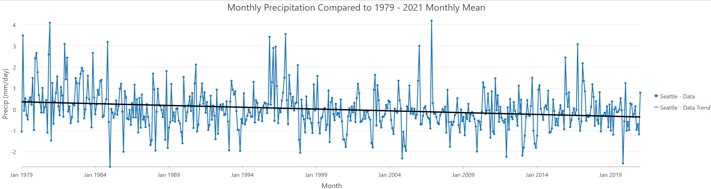

Corridor Analysis to Assess Most Suitable Areas for Bobcat Habitat in Vermont, USA
Bobcats in Vermont are being increasingly threatened by habitat fragmentation. New development has broken large contiguous patches of forest into isolated patches too small for bobcats to live. I created a suitability model identifying patches of land most suitable for bobcat, then analyzed the least-cost corridor between them. This connected the suitable patches of habitat, thus slowing down fragmentation. Tools used include Euclidean Distance, Weight by Function, Reclassify, Cost Connectivity, Locate Regions, Weighted Overlay, and Weighted Sum, among others.
Assessment of Monthly Precipitation Anomaly Changes between 1979 - 2014
I utilized ArcGIS Pro’s Multidimensional Raster Analysis tools to manipulate and analyze multidimensional raster data of sea surface temperature and monthly precipitation from 1979 - 2014. To start, I imported the sea surface temperature multidimensional raster and aggregated the dataset to show each pixel’s maximum yearly temperature. I generated an anomaly raster by subtracting each of these maximum temperatures against the global climatological mean maximum temperature. I performed a similar workflow for the precipitation dataset, with the addition of generating a Mann-Kendall trend map showing regions of monotonic precipitation trends. From this map, I concluded that oceans are getting drier and land is getting wetter over time.
Atmosphere and ocean energy transport in extreme warming scenarios
I analyzed extreme scenarios of global warming out to 2300 from the SSP5-8.5 extension in three climate models to explore various changes in climate dynamic patterns. In this figure, all three models show a wet-gets-wetter pattern in the deep tropics but a drying trend in the subtropics. These plots were generated using CartoPy. Link to Publication